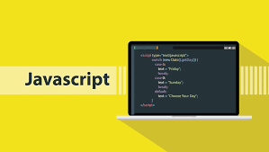

Neste curso você aprenderá os fundamentos de uma das linguagens de programação mais usadas atualmente, e
com a qual é possível criar aplicativos de todos os tipos. Inicialmente, você vai explorar algumas
ferramentas, investigando casos de aplicação prática. Você aprenderá sobre a utilidade das bibliotecas
estudando jQuery, e a aplicação de técnicas de desenvolvimento para aplicativos modernos com AJAX. Após
o final do curso, você poderá criar soluções web interativas e transferir o conhecimento do curso para
qualquer framework JavaScript.

Requesitos
Este é o segundo nível dos cursos de programação, portanto, você deve ter noções intermediárias de
HTML5, CSS3 e programação lógica, além de entender os conceitos básicos do DOM. É necessário que você
tenha os conhecimentos abordados no curso de Desenvolvimento Web.
Computador com Windows 7 ou superior, ou OSx. - Editor de texto para código (SublimeText, Atom,
Brackets, Notepad++, Visual Studio Code, etc.).
Recomenda-se ter o navegador Google Chrome em sua versão mais recente.
Desenvolvimento de um projeto prático que aplica os conceitos aprendidos durante o curso.
Lembre-se de que cursos de JavaScript podem variar em termos de complexidade e tópicos específicos
abordados,
dependendo do nível do curso (iniciante, intermediário ou avançado) e dos objetivos do instrutor ou
programa
de estudo.